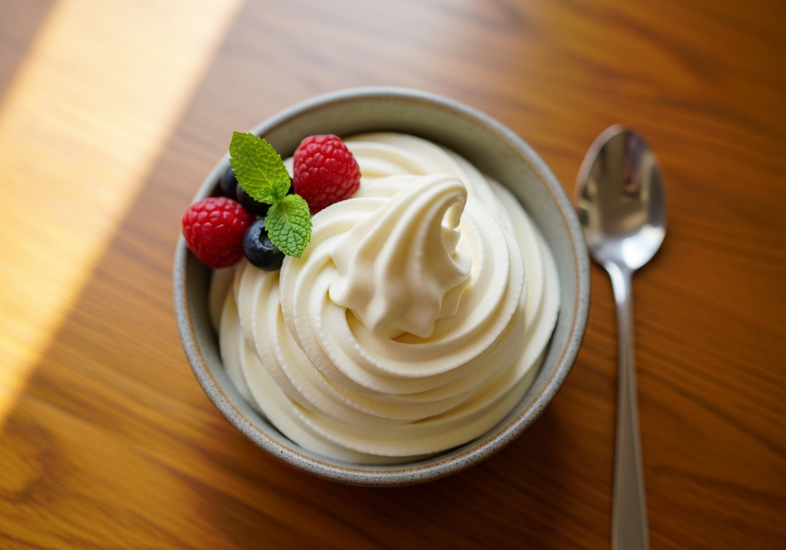

← Alle recepten

🍽 1 pint (4 porties)
⏱ Voorbereiding: 10 min
🔥 Bereiding: 24 uur
Σ Totaal: 24 uur 10 min
Ingrediënten
- 500 g volle Griekse yoghurt
- 100 g suiker
- 1 tl vanille-extract
- 1 tl citroensap
- Snufje zout
Bereiding
- Klop de Griekse yoghurt, suiker, vanille-extract, citroensap en zout in een kom tot de suiker is opgelost.
- Giet het mengsel in de Creami-pint tot maximaal de vullijn en vries minimaal 24 uur plat en waterpas in.
- Draai het ijs op de stand Ice Cream. Kruimelig? Draai nogmaals met Re-spin tot het romig is.